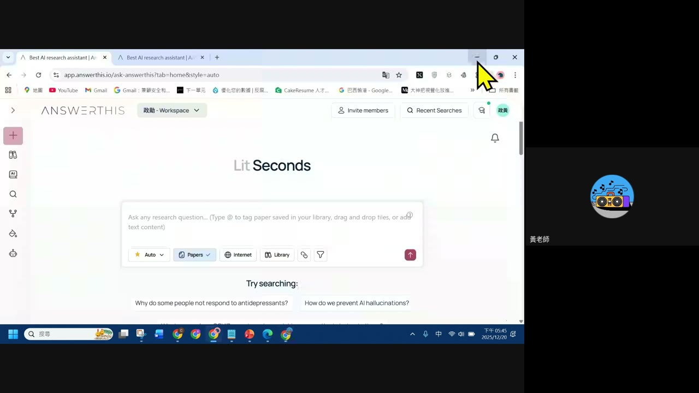
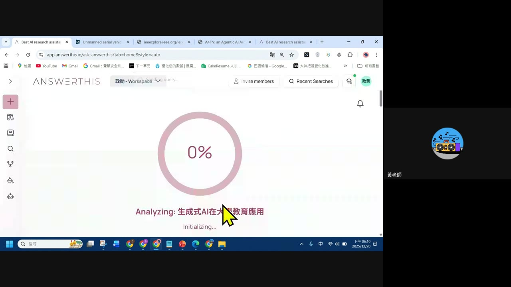
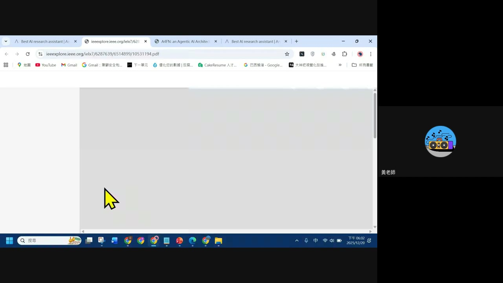
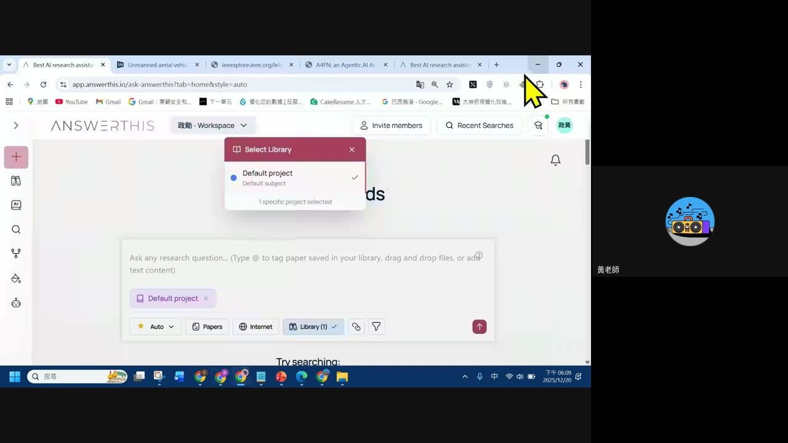
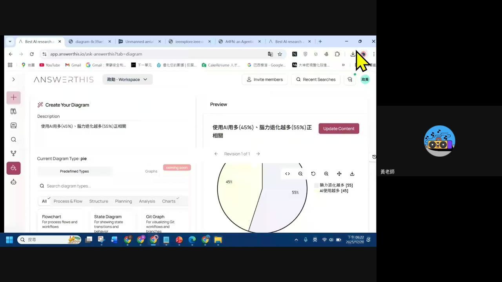

0. 課程資訊與教材
| 課程名稱 | EP4「生成式AI文獻耙梳工具：AnswerThis AI Research Assistant」 |
|---|---|
| 頻道 | 生成式 AI 應用電台・晨學講堂 |
| 直播日期 | 2025/12/20 傍晚（畫面時鐘顯示 17:45–18:31） |
| 教材 | 本集 Drive 資料夾只保留錄影回放（45.8 分鐘），未附獨立簡報檔 |
| 一句話先懂 | AnswerThis（介面自稱「Lit Seconds」）是一套幫你在論文堆裡快速找答案的 AI 工具：輸入研究問題，它會去搜尋論文、彙整回答，還能直接把整理好的內容轉成圖表。 |

1. AnswerThis 是什麼
畫面實錄：AnswerThis 工作區介面。
- 頂部導覽列有「政勳 - Workspace」等團隊工作區切換，並提供 Invite members、Recent Searches 等協作功能。
- 左側工具列圖示依序對應：新增查詢、資料庫／圖書館、資料夾、搜尋、版本歷程、繪圖／圖表、其他工具。
- 核心互動方式：在搜尋框輸入研究問題（可用
@標記已存入圖書館的論文、拖放檔案或貼上文字），直接開始分析。
2. 三種搜尋範圍：Papers／Internet／Library
畫面實錄：搜尋框下方的範圍切換按鈕，示範問題「生成式AI在大專教育應用」的分析進度畫面。
| 範圍 | 用途 |
|---|---|
| Papers | 只在學術論文資料庫中搜尋，回答會附上論文出處 |
| Internet | 擴大到一般網路資料，補足論文之外的最新資訊 |
| Library | 只在自己上傳／收藏的專案圖書館內搜尋，適合針對自己手上的文獻提問 |

3. 直接閱讀論文全文
畫面實錄：從搜尋結果點進 IEEE Xplore 的論文 PDF 全文頁面。

💡 這個「一路點進原始論文」的動線，呼應文獻研究工具的基本要求：AI 摘要之外，隨時能回到第一手來源核對。
4. 專案圖書館管理
畫面實錄：Select Library 選單。

- 每個研究主題可以建立獨立的 Project，底下管理自己的文獻圖書館。
- 搜尋時可以選擇「只在這個 Project 的圖書館裡找」，避免不同研究主題的文獻互相干擾。
5. 文字轉圖表：Create Your Diagram
畫面實錄：「Create Your Diagram」功能，把一句文字描述變成圖表。

- 左側輸入 Description（文字描述你想呈現的關係或數據）。
- 右側 Preview 即時生成對應圖表，並保留 Revision 版本紀錄（可切換 Revision 1 of 1 等）。
- 圖表類型不限圓餅圖，還有流程圖、狀態圖、Git 分支圖等多種「Predefined Types」可選。
「不用自己畫，用一句話描述數據關係，AnswerThis 直接幫你生成圖表。」
—— 本節示範重點
6. 重點整理
- AnswerThis／Lit Seconds：幾秒內完成文獻搜尋與彙整的 AI 研究助手。
- 三種搜尋範圍：Papers（學術論文）、Internet（一般網路）、Library（自己的圖書館）可依需求切換。
- 可回到原始論文：搜尋結果能直接連到 IEEE 等資料庫的 PDF 全文核對。
- Project 圖書館管理：不同研究主題可分開建立 Project，避免文獻互相干擾。
- 文字轉圖表：一句話描述數據關係，就能生成圓餅圖、流程圖等多種圖表類型。
7. 資料來源與製作說明
- 原始教材：EP4「生成式AI文獻耙梳工具：AnswerThis AI Research Assistant」錄影回放（45.8 分鐘，anyone-reader 權限，公開可下載）。本集 Drive 資料夾未附獨立簡報檔或課堂筆記 md。
- 製作方式：下載完整錄影 → 場景變化偵測抽取畫面關鍵幀 → 親眼逐張判讀畫面內容（工具介面、搜尋流程、圖表生成結果）→ 整理成本頁章節。
- 誠實聲明：本集錄影音訊品質不佳，faster-whisper 轉出的逐字稿大部分為重複亂碼、無法還原成有效語句，因此本頁內容以畫面截圖可直接判讀的介面文字與操作流程為準，不包含逐字稿內容，也不對未能辨識的口語說明做任何補述或推測。
- 介面參考：版型沿用本站 EP29–EP46 課堂筆記的乾淨白底編輯風格。